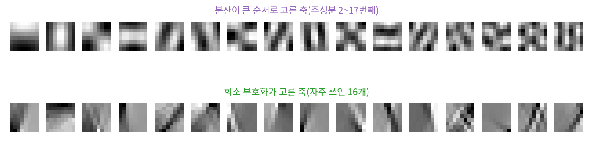
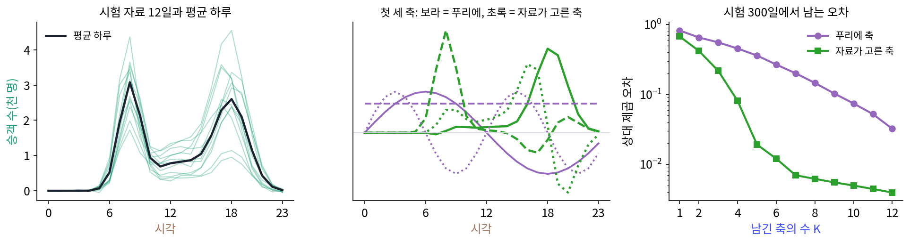

배운 축: 대칭이 없으면 자료가 축을 고른다
지하철역 하나의 시간대별 승객 수를 하루 24칸으로 적는다고 하자. 아침 8시와 저녁 6시 둘레에 봉우리가 서고, 봉우리의 높이는 날마다 조금씩 다르다. 이 하루를 숫자 몇 개로 요약하고 싶다. 이 책의 습관대로라면 24칸을 푸리에 축으로 다시 적고 센 계수 몇 개만 남기면 된다. 그런데 이 자료는 밀면 다른 자료가 된다. 화음 녹음은 0.125초 늦게 틀어도 같은 화음이지만, 승객 수를 세 시간 늦춘 하루는 이 역의 하루가 아니다. 출근 봉우리는 늘 8시에 선다. 미는 대칭이 없는데도 미는 대칭이 고른 물결을 쓰는 것이 맞을까? 맞지 않다면 이 자료에 맞는 축은 어디서 찾을까?
역사: 자연 사진이 고른 축
자료에게 축을 고르게 하는 생각은 오래되었고, 그 집은 시리즈의 「압축」 책이다. 여기서는 이 책의 줄기와 닿는 일화 하나만 본다.
1959년부터 이어진 허블(David Hubel)과 비셀(Torsten Wiesel)의 고양이 실험 이래, 뇌의 첫 시각 영역(V1)에 있는 단순 세포(두 사람이 1962년 논문에서 단순 세포와 복합 세포로 나누었다)는 시야의 좁은 곳에서, 특정한 방향으로 놓인, 특정한 굵기의 줄무늬에만 반응한다고 알려졌다. 한곳에 몰려 있고(localized), 방향이 있고(oriented), 굵기가 정해진(bandpass) 무늬다. 가보르가 1946년 시간과 주파수를 함께 적으려고 쓴 「창을 씌운 물결」과 닮아서 흔히 가보르 무늬라 부른다. 왜 하필 그런 무늬일까?
올스하우젠(Bruno Olshausen)과 필드(David Field)는 1996년 『네이처』에 낸 「자연 사진의 희소 부호를 배우면 단순 세포의 수용장 성질이 나타난다」에서 답 하나를 내놓았다. 자연 사진의 작은 조각들을 축 여러 개의 합으로 적되, 조각 하나를 적는 데 되도록 적은 축만 쓰도록(희소하게) 축을 배우게 했더니, 배운 축들이 한곳에 몰리고 방향이 있고 굵기가 정해진 무늬의 온전한 묶음이 되었다. 논문은 그때까지의 비지도 학습 방법 가운데 이 세 성질을 모두 갖춘 묶음을 낸 것이 없었다고 적었다. 분산이 큰 방향부터 고르는 방법(주성분 분석)은 사진 조각에서 조각 전체에 퍼진 물결무늬를 고른다. 사진 조각의 통계가 자리를 옮겨도 거의 같기 때문이다. 같은 사진에서 「적은 축으로 적기」라는 다른 기준을 주자 한곳에 몰린 무늬가 나왔다.
올스하우젠과 필드의 실험을 작게 흉내 내 볼 수 있다. 시리즈 공용 인물 그림 70장에서 8 × 8 조각을 뽑아(밋밋한 바탕 조각은 빼고 10866개) 두 가지 방법으로 축을 골랐다. 아래 그림의 위 줄은 분산이 큰 순서로 고른 축이고, 아래 줄은 조각마다 적은 수의 축만 쓰도록 벌점을 주어 배운 축 64개 가운데 자주 쓰인 16개다. 위 줄은 조각 전체에 퍼진 줄무늬, 아래 줄은 선 하나나 경계 하나다. 축의 제곱합 80%가 든 칸 수를 세면 위 줄은 64칸 가운데 중앙값 25칸, 아래 줄은 18칸이다. 인물 그림은 굵은 윤곽선이 많은 만화라서 자연 사진만큼 매끈한 가보르 무늬는 나오지 않았다.

승객 수 300일에서 축 고르기
지하철역 이야기로 돌아가자. 출근 봉우리(8시 둘레, 높이 평균 3천 명)와 퇴근 봉우리(18시 둘레, 평균 2천5백 명), 낮 시간의 낮은 바탕을 더하고, 봉우리의 높이와 시각을 날마다 조금씩 흔들어 만든 하루 300일치가 학습 자료다(실제 역의 기록이 아니라 스크립트로 만든 자료, 씨앗 0). 축을 고른 뒤 성적은 따로 만든 300일(씨앗 1)에서 잰다. 두 방법 모두 학습 자료의 평균 하루를 먼저 빼고, 남은 차이를 축 K개로 적는다.
고정된 축은 24칸 위의 실수 푸리에 축 24개(상수 하나, 물결 k = 1…11 의 cos·sin, k = 12 의 cos)다. 푸리에 쪽에 유리하게, 학습 자료에서 평균 세기가 큰 축부터 K개를 고른다. 자료가 고르는 축은 이렇게 구한다. 날마다의 차이를 모아 두 칸이 함께 커지고 작아지는 정도(공분산)를 24 × 24 표로 재고, 그 행렬의 고유벡터를 고윳값이 큰 순서로 고른다. 고윳값은 그 축 방향으로 자료가 퍼진 정도(분산)다.
자료가 고른 첫 세 축은 「대칭이 기저를 고른다」 그림의 마지막 줄과 같다. 첫 축은 17~20시에 몰려 있다(축의 제곱합 90%가 네 칸에). 퇴근 봉우리가 얼마나 높은가를 재는 축이다. 둘째 축은 7~9시에 몰린 출근 봉우리의 높이, 셋째 축은 16~17시가 양수이고 19~21시가 음수라 퇴근 봉우리가 일찍 섰는지 늦게 섰는지를 잰다. 이 셋에 분산의 35.3%, 23.3%, 20.0%가 담긴다. 푸리에 축은 에너지가 큰 순서로 골라도 첫 세 축이 18.7%, 15.1%, 11.5%다. 자료가 고른 첫 축과 가장 닮은 푸리에 축(sin 1, 하루에 한 번 오르내리는 물결)도 두 축 사이 코사인이 0.612에 그친다.
시험 300일에서 남는 상대 제곱 오차(되살리고 남은 차이의 제곱합 ÷ 평균을 뺀 값의 제곱합)는 아래와 같다.
| 남긴 축 K | 푸리에 축 | 자료가 고른 축 |
|---|---|---|
| 1 | 0.824 | 0.677 |
| 2 | 0.654 | 0.420 |
| 3 | 0.557 | 0.218 |
| 4 | 0.455 | 0.081 |
| 6 | 0.268 | 0.012 |
| 8 | 0.146 | 0.006 |
상대 오차를 0.10 아래로 내리는 데 자료가 고른 축은 4개, 푸리에 축은 10개가 필요하다. 이렇게 공분산의 고유벡터로 자료가 직접 고른 축을 이 책에서는 배운 축 (자료가 고른 기저 / learned basis)이라 부른다. 분산이 큰 순서로 고르는 방법은 주성분 분석이라는 이름으로, 희소 부호화는 다른 기준으로 축을 배운다.

배운 축은 그 대가로 자료가 놓인 시각에 묶인다. 같은 역의 평균 하루를 세 시간 늦춰 보자(시차가 세 시간 나는 도시에 똑같은 역이 있다고 생각하면 된다). 칸 값은 가장 많이 다른 곳이 3.01 차이 나지만, 푸리에 축으로 잰 주파수별 세기는 2.8 × 10⁻¹⁴ 안에서 같다. 미는 대칭이 고른 축이라 밀어도 세기가 흐트러지지 않는다. 반면 배운 축 세 개의 계수는 0, 0, 0(평균 하루 자신이므로)에서 −1.15, −2.90, −2.56으로 크게 바뀌고, 늦춘 하루를 배운 축 세 개로 되살리면 상대 오차가 0.603이다. 배운 축은 「8시에 서는 봉우리」라는 이 자료의 사정을 담았으므로, 그 사정이 바뀌면 다시 배워야 한다.
ML에서: 배운 축은 「압축」 책으로
자리를 옮겨도 통계가 같은 자료라면 배운 축이 물결로 돌아간다는 것은 평행이동 대칭을 다룰 때 보았다(고리 위 신호의 공분산은 원형 행렬이고, 그 고유벡터는 물결이다). 그림 조각에서 배운 축이 이산 코사인 변환의 코사인 무늬를 닮는 것도, JPEG 의 코사인 축이 사실은 제곱 오차로 가장 좋은 배운 축(카루넨–뢰브 변환)을 빨리 계산하려는 대용품으로 나왔다는 이야기도 디퓨전 책에 있다. 제곱 오차로 배우는 활성화 없는 오토인코더가 배운 축과 어떤 관계인지는 문제 3에서 직접 계산해 보자.
대칭이 없는 자료에서 축을 배우는 일(주성분 분석, 사전 학습(축의 묶음을 자료에서 배우기), 희소 부호화)과 그 위에 서는 「짧게 적을 수 있으면 이해한 것이다」라는 관점은 시리즈의 「압축」 책이 맡는다. 그 책이 서기 전까지는 아래 두 절이 가장 가까운 길이다.
문제 1. 역무원의 장부
역무원이 날마다 장부에 숫자 세 개만 적어 그날의 승객 수를 남기려 한다. 평균 하루는 모두가 안다. 시험 자료의 셋째 날은 7시, 8시, 9시에 1.25, 1.99, 1.32천 명이었다(평균 하루는 1.95, 3.08, 2.14천 명). (가) 이날을 푸리에 축 세 개와 배운 축 세 개로 각각 적었다 되살리면 상대 오차는 얼마인가? (나) 배운 축 세 개의 계수는 무엇을 뜻하는가? (다) 같은 장부 양식(이 역에서 배운 축 셋)을 놀이공원 앞 역에 그대로 쓰면 어떻게 되는가? 놀이공원 앞 역은 오후 2시 둘레에 봉우리가 하나 서는 역이다. (위젯 1의 「문제 1 불러오기」로 확인해 보자.)

(가)는 위젯에 넣으면 푸리에가 0.468, 배운 축이 0.067이에요. 배운 축이 일곱 배 가까이 나아요.

(나)는요? 이날의 계수는 −0.67, −1.43, −0.89예요.

둘째 축이 출근 봉우리 높이니까, 둘째 계수 −1.43은 출근 시간 승객이 1,430명 적었다는 거죠?

8시 칸을 직접 볼까요, 민준 학생. 이날 8시는 평균 하루보다 몇 명 적었죠?
1.99 빼기 3.08이니까 1.09천 명이요. 1.43이 아니네요.

축은 길이가 1인 벡터라서 −1.43이 7시, 8시, 9시에 나뉘어 들어가. 둘째 축의 8시 칸 값이 0.72니까 둘째 축이 8시 승객 수 차이에 보태는 값은 −1.43 × 0.72 = −1.03이야. 계수는 칸 하나의 승객 수가 아니라 「출근 봉우리 모양이 얼마나 들어 있나」야.
그래요. 셋째 계수 −0.89는요?

셋째 축은 16~17시가 양수이고 19~21시가 음수예요. 계수가 음수면 이른 칸을 내리고 늦은 칸을 올리니까, 퇴근 봉우리가 늦게 선 날이에요.
그러면 (다)는요? 같은 장부를 놀이공원 앞 역에 주면요.
계산하면 상대 오차가 0.528이에요. 푸리에 축 셋(지하철역에서 고른 순서 그대로)이 0.464니까 오히려 더 나빠요. 놀이공원 역 자료로 다시 배우면 0.006이고요.
이 역의 축은 「8시 봉우리, 18시 봉우리」를 재는 칸이라 오후 2시 봉우리를 적을 칸이 없는 거야. 푸리에 축은 어느 역에도 똑같이 어설프고, 배운 축은 자기 역에만 잘 맞아.

동아리 회계 장부 양식을 옆 동아리에 줬더니 항목이 하나도 안 맞던 거랑 같네요. 우리는 「간식비」 칸이 제일 큰데 거기는 「장비 대여」가 제일 컸어요.
문제 2. 공분산이 거리에만 기대는가
고리 위 신호처럼 자리를 옮겨도 통계가 같으면 두 칸의 공분산은 두 칸 사이의 거리에만 기대고, 공분산 행렬은 원형 행렬이 되어 배운 축이 물결이 된다. (가) 승객 수 학습 자료에서 7시와 8시, 12시와 13시, 2시와 3시, 17시와 18시의 공분산을 비교하라. 거리는 모두 1시간이다. (나) 학습 자료의 날마다 24칸을 고리로 보고 0~23시간 민 24가지를 모두 넣어 자료를 24배로 늘린 뒤 축을 다시 배우면 어떤 축이 나오는가? (다) 늘린 자료의 시험판(시험 자료도 같은 24가지로 민 것)을 그 축 네 개로 적은 오차를, 늘리지 않은 원래 자료를 원래 배운 축 네 개로 적은 오차 0.081과 비교하고, 무엇을 얻고 무엇을 잃었는지 말하라.
(가)는 0.392, 0.082, −0.000, 0.483이에요. 거리가 같은데 값이 제각각이에요. 출퇴근 시간 이웃끼리만 크게 함께 움직여요.
그러면 공분산 행렬은 원형 행렬인가요?
아니에요. 원형 행렬이면 대각선 하나를 따라 값이 같아야 하는데 0.39, 0.08, 0으로 달라요. 그래서 배운 축이 물결이 안 나왔구나.
(나)는 계산하면 고윳값이 4.537, 4.537, 3.830, 3.830, 2.153, 2.153으로 둘씩 짝지어 나와. 축마다 제곱합이 물결 하나에 1.0000만큼 들어 있어. 순수한 물결이야. k = 2 짝, k = 1 짝, k = 3 짝 순서고.

데이터는 사인과 코사인을 몰라요. 밀어 늘리기만 했는데 왜 물결이 나왔을까요?

24가지로 다 밀어 넣으면 「몇 시에 봉우리가 서는가」에 대한 정보가 자료에서 사라져요. 어느 시각도 다른 시각보다 특별하지 않으니까 공분산이 거리에만 기대게 되고, 원형 행렬이 되고, 고유벡터가 물결이 돼요. 짝으로 나오는 것도 cos 와 sin 어느 쪽을 고를 까닭이 없어서고요.

(다)는 늘린 자료를 그 축 넷으로 적으면 0.352예요. 원래 자료의 0.081보다 네 배 넘게 나빠요. 원래 배운 축 넷으로 늘린 자료를 적으면 0.599고요. 대칭을 얻은 대신, 「8시」라는 정보로 짧게 적던 힘을 잃었네요.

해석학 수업에서 평균을 내면 함수가 매끄러워지는 대신 뾰족한 데가 지워진다고 배웠는데, 대칭으로 평균을 낸 것도 같네.
문제 3. 숨은 칸 셋짜리 오토인코더
승객 수 24칸을 숨은 칸 3개로 줄였다 되살리는 선형 오토인코더(활성화 없음, 인코더 3 × 24, 디코더 24 × 3)를, 학습 자료 300일의 평균 하루를 뺀 값에 대해 제곱 오차로 학습시킨다(처음 가중치 표준편차 0.1, 씨앗 3, 학습률 0.01 의 경사 하강 20000걸음). (가) 학습 상대 오차는 어떻게 줄어드는가? 시험 300일의 상대 오차를 배운 축 세 개의 0.218과 비교하라. (나) 디코더의 세 열은 배운 축 세 개와 같은가? (다) 두 결과를 함께 설명하라.
숨은 칸 세 개면 역무원 장부에 숫자 세 개만 적던 거랑 같네요. (가)는 걸음 0에서 1.006, 500에서 0.226, 2000에서 0.214, 20000에서 0.214로 멈춰요. 시험 오차는 0.2180이고 배운 축 셋은 0.2179예요. 거의 같아요. (나)도 그러면 디코더 열이 배운 축이겠네요.
디코더 첫 열과 배운 축 1, 2, 3 사이의 코사인을 재 봐요.

0.893, 0.338, 0.295예요. 첫 열이 첫 축과 닮긴 했는데 1이 아니에요. 둘째 열은 셋째 축과 0.844, 셋째 열은 둘째 축과 0.853이고요. 오차는 같은데 축은 달라요?
디코더 열이 펼친 3차원 면과 배운 축 셋이 펼친 면을 비교해 봐. 두 면 사이의 각(주각)의 코사인이 1, 1, 1이야. 면은 같은 면이야.

그래요. 제곱 오차는 「어느 면에 사영하나」만 보고, 그 면 안에서 축을 어떻게 돌려 놓았는지는 보지 않아요. 그러니 오토인코더가 배우는 것은 배운 축 세 개가 펼친 면이고, 그 면 안의 방향은 출발점에 따라 달라져요.
그래서 오차가 0.2180과 0.2179로 같았구나. 축을 하나하나 고르려면 분산이 큰 순서처럼 면 밖의 기준이 하나 더 있어야 해.
조별 보고서를 셋이 나눠 쓰면 누가 어느 단락을 맡든 보고서는 똑같은데, 이름표만 사람마다 달라지는 거랑 같네요.